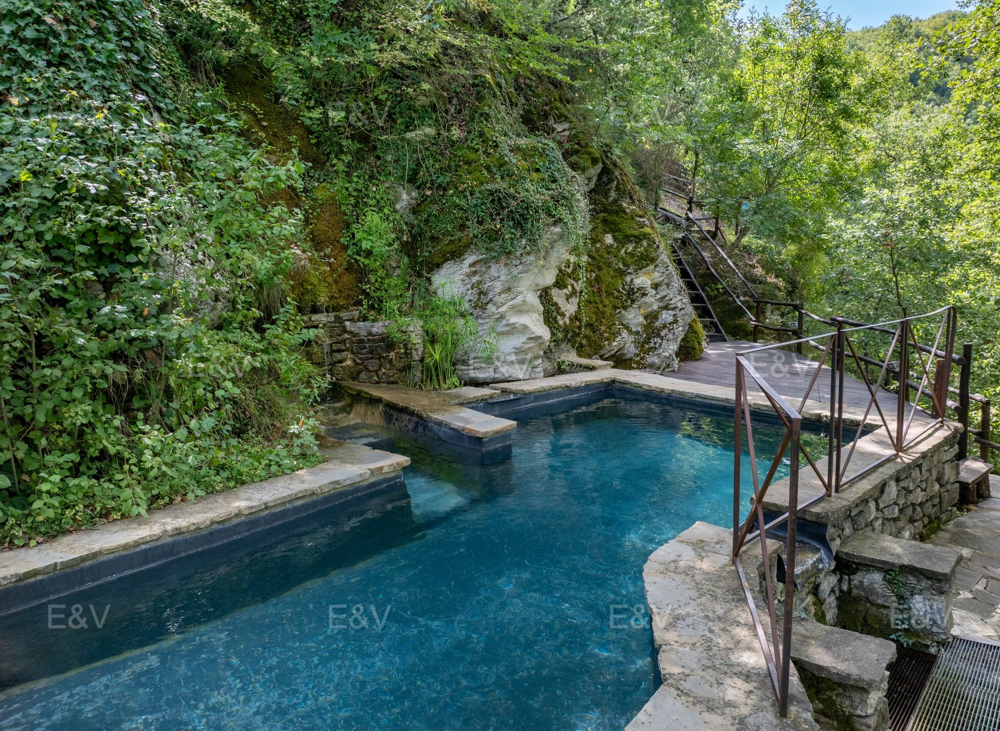

€1.100.000
Poppi (Casentino / Arno Valley) · Tuscany · Italy
Rare old-mixed-with-new Casentino keeper: authentic 12th-century Guidi tower (1115), renovated 2015 in stone and wood with Corten details, plus a verified built private rock-cut pool and hot tub on ~7 ha oak/chestnut park - habitable now, not a project or possibilità piscina.
Opened 30 Sep 2026 on Engel & Völkers Arezzo expose; asking €1.100.000; ref W-04BLR7; uuid 2a8d5ab4-039c-5e01-98f4-759057aebcff; 3 beds / 2 baths; 250 m² total (222 living); plot 73.000 m²; published overnight vs 29 Sep under-cap set. Hero is rock-cut cobalt pool (ucarecdn 19810732-...). Distinct from board ortignano-poppi-country-pool (W-04B4FZ). Also marketed as established lodging. Not a bargain at near-cap.
View listing